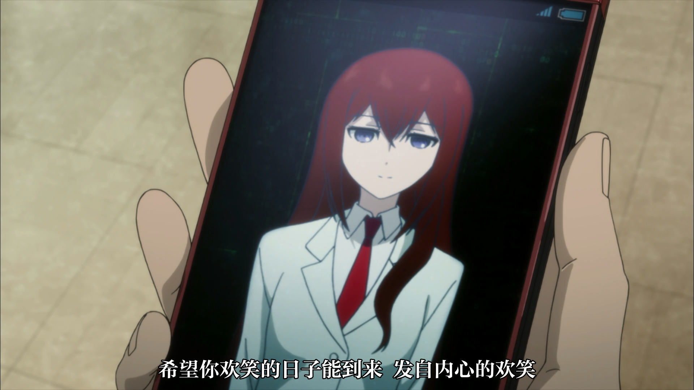

与石头门本篇相比，《命运石之门0》的整体基调显然更为压抑和沉郁。凤凰院凶真脱掉了中二病的白大褂，穿上黑色大衣变成冈部伦太郎，终于拥有了“男主该有的帅气”，却因为眉眼间抹不去的忧郁神色而令人非常心疼。
仍记得当时坐在从厦门回杭州的动车上，一口气看完了本篇的结局，真正理解了小柴的锁屏密码“048596”中所蕴含的希望与内涵。然而，1.048596这一数字背后的无数努力，却要在0中才能充分呈现。
从上周开始每天吃饭时看一两集，到现在差不多看了一半，几乎都是缓缓推进的节奏。但是不知为何，确信再过几集，剧情将进入目不暇接的高潮阶段，毕竟本篇就是这样的模式啊！
在0中，人物命运的悲剧性被放大至眼前，也正因为这详细的描绘使得几个角色的形象更加饱满而惹人怜爱。在看本篇时一直对嘟嘟噜无感，觉得就是一个天然呆小妹妹，我实在不吃这个人设，也不太懂所谓青梅竹马的感情是亲情、友情、还是类似爱情的东西呢？然而在0里却对她心生好感（并不是因为嘟嘟噜变成了巨乳的缘故），因为她对小冈伦的感情已经呼之欲出，一颗真心温柔地摆在观众面前，却也止于温柔的注视，没有任何进一步的打扰。嘟嘟噜太了解小冈伦了，她无法像助手一样聪明地为冈部出谋划策，但她能捕捉到他所有隐而不发的情绪。所以一眼就看出小冈伦看着手机时的表情是爱恋，在天台的门外静静伫立着听他和Amadeus通话然后离开，在其他人打趣的时候轻轻地拂去他们之间暧昧的纱，“小冈伦有喜欢的人了”。嘟嘟噜的神情很多时候都让我觉得心疼，她是小冈伦想要守护的重要的人啊。

不过，最喜欢的是助手，这一点无法改变。命运石之门毕竟是男主视角下的故事，而助手一次又一次的相信、帮助，流露的真情，没有助手的鼓舞与信任，冈部大概不知在哪次的时间跳跃中就会彻底倒下。0最奇妙的一点在于，通篇讲述的都是助手已经死亡的β线故事，却仍然让这位逝世的角色拨动着观众的心弦。无论戏份的多少，心始终为她所牵动。同样是对着AI老婆诉说衷肠，《轮到你了》中的翔太君每次对着AI奈奈酱阿姨大一哟的时候都让我感觉他是个不折不扣的铁憨憨，可石头门0中对着Amadeus露出泫然欲泣笑容的冈部却在诠释着令人动容的真爱。第八集重回α世界线更是将这种情绪引至高潮，在残酷二选一中被冈部选择的助手，注视着日日被愧疚反复折磨的冈部，注视着为真由理的死亡哀哀哭泣的朋友们，注视着这个世界，聪敏而又温柔的她，早已想好了自己的结局。就像无论多少次时间跳跃，每条世界线上的她都会相信冈部的话，并朝犹豫彷徨的他伸出援助之手一样，她永远信任、理解冈部伦太郎，是与他并肩作战的助手。所以，在黄昏中她轻而易举地找到颓然坐在阶梯上的冈部，对他说“我知道的哦，冈部，你……是从别的世界线来的呢。”她瘦弱的身影在电话微波炉前，却是可靠的模样，“时间机器我修好了，冈部，你用这个回到原来的世界线吧。另外，答应我一件事，回去后，忘了我吧。就算做不到也要做到，这就是我的期望。”时隔这么多集，再次踮脚送上的一个吻，以及伴随着吻所覆上的指尖，轻轻按下的发送键。与本篇的伏笔连接成了一个自洽的圆，只是缺失了一环最重要的人的笑脸。
“冈伦，已经可以了哦。不要再使用这种语气了哦，真由氏已经没事了，冈伦……可以为自己而哭了。”